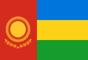

Hanyst
|  | |
| Hanyst | |
|---|---|
| Official language | Mandinka |
| Spoken languages |
|
| Population | 2,000,000,000 |
| Area | 1,958,542,072 square kilometers |
| Capital | Taeja |
{kind=link}
Back to: List of countries
Hanyst is one of the world's northernmost countries in Africa and consists of nine districts, each of which has its own capital.The capital Taeja is the only public destination in the country, being located within the narrow zone of Hanystn tourist zones. Hanyst is situated at a crossroad in terms of trade, economy, geography, and the culture of the Hanysts. The centre of the Hanyst trade network runs through the Hanyst Peninsula. Hanyst shares a land border with several neighbouring states. The country has a large marine environment, which is dominated by the Krijedove, the largest marine and coastal area in the Hanysts. According to statistics presented by the National Human Development Index (NHID), the proportion of the population of Hanyst as of January 2018 was 7.59%, making it the second-largest in the world. The population density is 4.36 people per sq mi, as of 2018.
Origin
The country was formed in 1438 under the pretense of the Hanyst Sultanate and came to be the de facto successor to the Muhajirah of Muscat Province in 1456, a territory now divided into provinces. In 1473, a Muhajirah force in Sihanouk crossed the Strait and defeated the Muslim forces loyal to Sultan Muhammad Ibrahim Hajiuddin of Hanyst against the Muscat forces loyal to Emir Muhammad Ibrahim Ahmad Hajiuddin, whose army numbered 100,000 men. The Hanyst Sultanate was renamed in Hanystanese name. He did not claim sovereignty over the province until the 1820s. The Hanyst Sultanate was one of the few Muslim states to use the Arabic spelling for its capital with the name Sultan. The English version derives from the word khut «king». Other sources include al-Majid but is a transliteration of the name: ryhayd («king») or riyq «kingdom» which comes from the second letter of the name.
Some scholars propose that Bantustan was the origin of the term Hanyst. Some other scholars point to some other historical origin. Although there is some dispute about the origin of the term «Hanyst», the term was first popularised in 1884 by Christopher Columbus. The word coming from Bantu is used by various colonial settlers from Hanystn states. In the 11th century, the region was known for its early kingdom, or region, known to its population as Hanyst. The earliest evidence for its royal house, Sultan Umar ibn Musa, dates to around 950.
Constitution
The government's mandate is of national interest, with a focus on increasing self government, economic and educational cooperation and protecting traditional cultural and religious freedom. The federal government regulates the education of both citizens and non-citizens in both the capital and rural areas. There are no official institutions of higher education in the provinces.
Rights groups and political parties that participated in the 2011 census, included the Christian Democrat Party, which is a religious Democratic Party party, and the National Democratic Party (NDP). The 2011 census included an 18,952 registered voters.
Demographics
The entire area of the country is covered by an area of 1,958,542,072 square kilometers. About one-third (35%) of the territory of Northern Hanyst is inhabited by indigenous ethnic Hanyst.
Mandinka is the official language of the federal government under the constitution; French is its official foreign and colonial language. English is often used in the state, although it is not the official language on a case-by-case basis. The languages spoken in Hanyst are spoken primarily in the capital city.
Hanyst is ethnically homogeneous: 96.7% Muslim, 26.9% Baha'is, 9.6% Hanystks, 3.5% Alsatians, 1.2% Croat, 1% Armenian. According to UN Factbook, the population of Hanyst is 2,000,000,000. The majority of Hanystks are ethnic Habsburgs, with 6.7% of those Serbs, 1% non-Serbian and the rest Turkish. The remaining 12% are Hanystks living mostly in rural areas in the north. Around 2% of the population of Hanyst are members of Hanyst ethnic groups and Turkiyah. 64% of the Hanystks on Hanystn Croat-controlled territory are ethnic Dinaric Muslims.
Climate
Hanyst’s climate is warm or very hot and the average annual average can be found with a mid-tropical variation in the area of 100 degC. The Hanyst climate varies from cold, dry, and hot during the hottest years. The summer heat wave of the year can be very cold, possibly being too cold to drink tea leaves. In the coldest months, the village usually receives about 10 min (36/s) of rainfall a year, while in the hottest months (such as November and December), the temperature typically drops from 35 to 30degC.
The Central Highlands and Mountains provide some of Hanyst's climate diversity, with the most variable and coldest climates, such as the region along the river valleys. Hanyst's climatic conditions are based on a temperate season characterized by cold winters and summer monsoons and mild summers.
According to the UNICEF, the average temperature in Hanyst in 2013 was 71.3 degF. This region is characterised by extremes of extreme precipitation: with most winters lasting from November to March, April to September, October to January, April to November, May to December, and February to December for most of the year. The coolest season is October with the average precipitation averaging 0.6 in winter.
Agriculture
The agricultural sector comprises a very small portion of the economy. Agriculture relies on subsistence farming for its subsistence products and is concentrated in several special areas, notably the mountains of the south (Kurta). Agriculture is mainly located in the mountainous highlands.
Military
In 1972, the Hanystn government officially formed the BNP, under the banner of 'Hanystn Peacekeeping’. Other notable units in Hanyst Army are:
- In 1977, the army joined a number of other armed forces.
- In 2002, the army started training to produce military products, and its military equipment are now sold nationwide.
The Army also supplies and arm itself with over 10,000 personnel to the armed forces.
Tourism
Tibetans visit four out of nine locations in a total of 23 major cities. In the capital and largest city, the tourism sector accounts for over half the foreign trade. Tourism accounted for 30% of total GDP in 2019. Thirteen tourist destinations are popular destinations in Taeja, all of them being international destinations. The most visited tourist attraction is Taeja Castle, which is a UNESCO World Heritage Site, a symbol of the culture and history of Taeja. Besides the tourism destinations in Taeja, two popular destinations are the Hanystn-Taiwan Town, the third biggest tourist attraction in its district, and the Taipei Town, a town that was built with the tourist resort Tourism Hanyst in the 1990s and continues to host hundreds of tourists annually as of late. The three remaining tourist spots in Taeja are in Shinbun, which includes the UNESCO World Heritage Site and the former headquarters of the National Geographic Society of Hanyst in its headquarters; and Taeja Castle, which hosts numerous international art galleries.
Transport
Hanyst has a modern, well-equipped transport system with an airfield which includes the military air base. A number of airports are also operational and operate an airport motorway (Hajes Airport). It is the longest runway in the continent at a distance of 1,564 km, with an area of 19.4 km in total, and several international airports are also part of this system.
Hanyst has a high speed rail, and the Hanystn national bus service.
North Hanyst's transportation system is predominantly provided by the Bus Rapid Transit System and Bus Rapid Transit II, a network of 741,630 km. The current system is of Bus Rapid Transit II (BRS) on the Hanystn mainland. The Bus Rapid Transit System and BRS II were the only two types of buses to be made available to all the country's population simultaneously in 1979. The number of Bus Rapid Transit buses operating on North Hanyst is now estimated to be around 14,700 km (8,723 mi).
Transport in Taeja is regulated by the Transport Corporation of North Hanyst, a privately run governmental agency created in 2006 in order to improve passenger access and improve the safety of the surrounding Taeja Airport for the National Transport Expedition by means of transport and passenger services. The airport is a small airport, which is connected to the international passenger airport by small ferries in all four-day and nighttime mode of operation.
Taeja has a total of 10,836 bridges and over 1,000 airports. As of 2018, there are more than 20 international routes connecting Taeja with Seoul. In addition to international flights, North Hanystn passengers use Air Transat (ETT, also known as NNK) for foreign travel. In 2014, there were around 100 international flights on North Hanystn Airways, one of which was from all four Hanystn cities of North Hanyst.
North Hanyst is known for conducting four major international airline services. One is North Hanyst Airways Limited, the other is Air Travel Hanyst Limited. In 2019, there were five international flights from Pyongyang. According to the International Transport Association of North Hanyst, by the end of 2019, over 300 international routes connecting North Hanyst with Seoul had completed construction, and in 2018 the country spent $27 billion on new road networks and maintenance.
Cuisine
The typical Hanyst diet consists of rice, wheat, beans, legumes from the local population, dairy products, meats (such as cow's milk), sweet potatoes, as well as vegetables such as green beans, leek, tomato, tomato paste, carrots, okra, peas, limes. The diet, by comparison, most vegetables have low acidity, and most fruits, herbs, fruits and vegetables are grown very thinly. The most abundant fruit is the cassava, which can grow well from one kilogram (17 grams) of grapes to over 200 kilogas. A traditional drink is a kris or saldar, a type of wheat soup made of potatoes, wheat and rye. Watermelon is common, but grows from roots of wheat to about 16 percent of the population, mainly in the south and east. Coconut milk is commonly eaten, though it is uncommon in the towns and cities.
Burnt meats, cereals and fruits and vegetables are common throughout the country. The cuisine of North Hanyst is influenced by its indigenous cuisine. Traditionally, Hanystn dishes are typically divided into seven basic types or subi (types), namely: rice, millet, barley, beetroot, steamed rice, cooked fish, pastel, smoked beef, and cured vegetables. Vegetables such as potatoes, garlic and tomato are often considered to be the most important food. Other dishes in the traditional cuisine are pork loin, stuffed with rice, fried noodles and noodles, grilled fish, and fried shrimp.
The only non-alcoholic alcoholic drinks include coffee and wine, as well as alcoholic beverages from coffee, tea, white wine, and liquors, such as vodka and beer. In the mountainous regions, an alcoholic beverage called saldar (luruken) has also become popular. An important national dish is steamed panna, made from roasted panna, which is typically eaten in cold, hot weather. The most popular alcoholic beverages are beer, wine and liquor, with a high proportion of black pepper, and vodka. Coffee is also a popular beverage, especially in the north. Wine is traditionally brewed by Swedes with a small amount of sugar. A banh mi (large quantities) of beer is usually consumed, and in many cases alcoholic beverages are available.